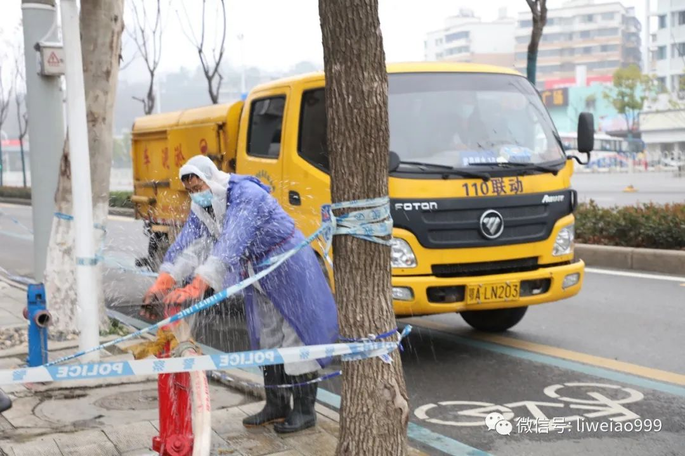
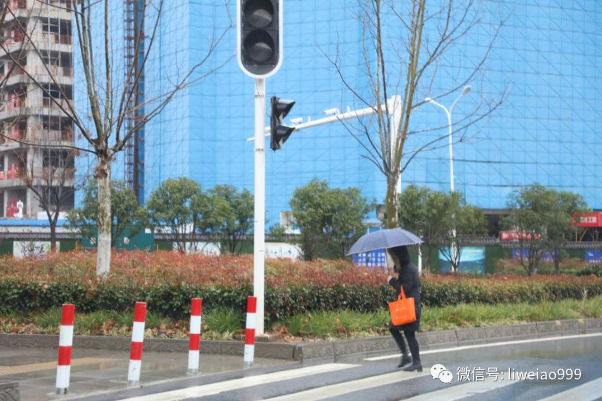
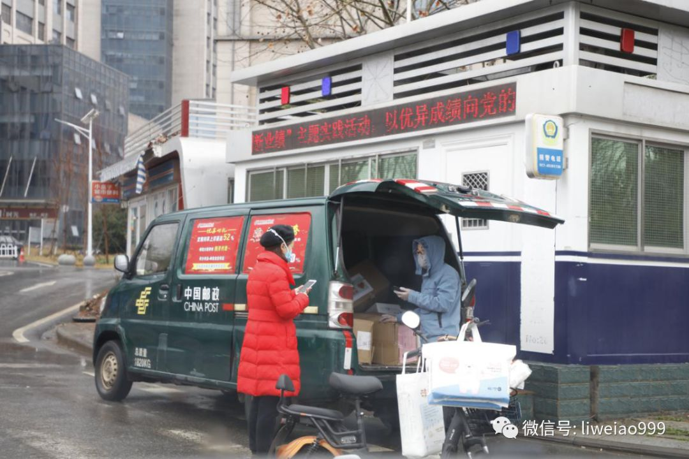
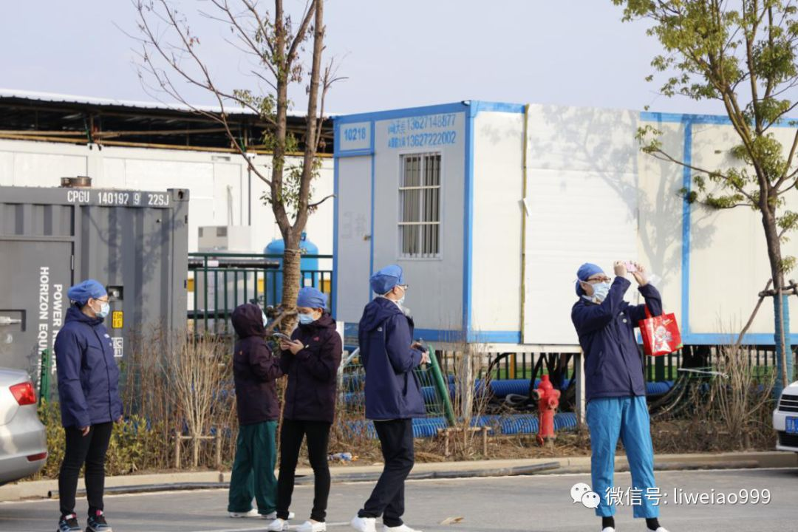

一线医护者故事：没有一个冬天不可逾越
原文链接 备份链接 // “在清水里泡三次，在血水里浴三次，在碱水里煮三次，我们就会纯净得不能再纯净”。 托尔斯泰在《苦难的历程》中如此描述人们从革命走向胜利的艰辛过程，在此时，身处武汉的一线医务工作者又何尝不是经历着清水、碱水甚至血水 …
我先跳过2月21日-26日，在武汉的街头见闻，将27日-29日，2月这最后三天的情况，日常见闻发在这里吧。
此前的文章 《武汉，这些天的街头巷尾》，以及《武汉，这些天来的街头巷尾（之二）》。
2月27日
26号，武汉下雨了；27号，天依然阴沉，时不时有些麻麻细雨。
我到了武汉一位老大哥在中山路小东门开的餐厅来了。
恰好，遇到有辆捐赠物资的车，停在门口，老大哥和他的员工们正在卸货。
这辆车是从山西运城开过来的，车上装的是苹果，“慈善使者华哥”采购，捐赠给武汉。老大哥的餐厅，分到了200箱，然后，他们每天再把这些苹果，连同盒饭一起，再送到住在隔离点的人们那里。


在武汉的这些天里，总是时不时见到来自全国各地的各种各样捐赠物资的车辆。
2月22日，我们第一次在湖北省人民医院东院采访时，医生们也告诉我们，有位陕西人，自己开车给医院送来了几十吨的苹果——因为，他有两位亲人，之前得到过医生们的救治帮助，所以他一直对医生护士们，心怀感激。
“知恩图报”，“一方有难，八方支援”，在中国，从来不仅仅是一句“口号”……

（在中山路，接消防水管的人）
从老大哥那出来，我到东湖路的中石化加油站——来武汉这二十几天，每天都在开车，我已经加了四次油了。
同时，我还盘算着，加油站的小超市，是我希望买到零食的“最后希望”，我原本不是个爱吃零食的，但这些天却总是感到饥饿，时不时想多吃点什么。
10天之前的2月17日，在这个加油时，里面有3位工作人员，这一天只剩下1位了。
这位工作人员跟我说，他们也不能卖东西给个人客户了，她还补充了一句：
“再说，我们的货架也已经卖空了”……

2月28日
武汉的雨，继续在下，而且下得不小，气温也下降了不少。有一阵，敲打在车窗玻璃上的，可能已经是雪籽了。

在湖北省人民医院东院区，衣着单薄的医护人员，佝偻着抱着自己的身体。

在医院的重症病房区域，我们向从新疆来援助的女医生——新疆人民医院感染科副主任杨晓筠大夫请教。

（新疆人民医院感染科副主任杨晓筠）
有些让人意外，在感染科里工作了二十多年的杨大夫说，她感觉自己在武汉的工作，与在乌鲁木齐时没有什么太多区别，甚至有时候还轻松一点点。
她所管的三十多张病床，在刚接手之初，有一位病人去世了；后来这二十多天，没有新的死亡。
当然，现在还是有几位没有脱离危险的危重病人……

（医院里，墙上贴着进入病房前的“十个步骤”。这些天，我们问了几个省份过来的医疗队，暂时，都没有医护人员被感染新冠病毒——在全面警惕，防护物资到位后，医护人员的感染情况明显减少，这也是一个很好的消息）

（在湖北省人民医院东院门口派发快递的邮政车辆——另外一个话题：这些天来，武汉街头的快递，我只注意到邮政、顺丰这两家，能送到个人手中。其余的是否也有在运营的呢？）
2月29日
2月29日，“四年等一回”的日子。
这天，我又到了雷神山医院。
十几二十天前，我们到这里时，很多地方还在修建，现在的医院，基本一切就绪。
与之前设想的不一样，这里不仅收治新冠肺炎的重症患者，有些轻症患者也住进来了。
在医院大门口，我遇到了5位出院的病人。也有武汉市青山区的工作人员来接他们——治愈出院的患者，还需要先继续隔离一段时间才能回家。

患者们一个劲地向医护人员表示感谢：
“谢谢你们，谢谢你们，这段时间太感谢你们了”。

（这位出院的患者，向送她出来的医护人员，双手竖起了大拇指）

（这位出院的患者大姐感慨：我都十几天没有看到过太阳了……）
是的，下午的时候，武汉天晴了，太阳很努力地，一次又一次地，挤出云层。
下班的医生们，也停下了脚步，拍这几天未见的太阳……

3月，来了。
2020年3月，是否会成为武汉的胜利月，湖北的胜利月，中国的胜利月？
我们继续坚持着、努力着！
愿天佑中华！
李微敖
敖虽资浅，愿为良记
长按二维码向我转账
敖虽资浅，愿为良记
受苹果公司新规定影响，微信 iOS 版的赞赏功能被关闭，可通过二维码转账支持公众号。
原文链接 备份链接 // “在清水里泡三次，在血水里浴三次，在碱水里煮三次，我们就会纯净得不能再纯净”。 托尔斯泰在《苦难的历程》中如此描述人们从革命走向胜利的艰辛过程，在此时，身处武汉的一线医务工作者又何尝不是经历着清水、碱水甚至血水 …
原文链接 备份链接 从2月7日到现在，一方面大家的活动越来越丰富，另一方面由于轻症患者比较多，人们病情都慢慢恢复。所以，我看到每个人脸上的笑容都变多了。 口述 | 余 毅 整理 | 王仲昀 这一个月终于要过去了。 2月21日上午，在等待几 …
原文链接 备份链接 这次来武汉，我从楼上看下去， 整个大街空无一人，这样的武汉我第一次见湘雅二医院医护人员全副武装，进入隔离病房。受访者供图，下同 一瓶剁辣椒，一支哮喘药，湘雅二医院的刘先领找齐“保命”的家伙，准备去武汉。 这是元宵节前一 …
原文链接 备份链接 除了菜品的装卸、运送外，我还要负责为各个医院不同的人群制定不同的菜谱。比如，护士群体需要增加抗疲劳的食材，专家组的菜品可略微清淡，而建筑工人的菜单，则需要大油大荤。 口述 | 石在余 整理 | 刘朝晖 昨晚到今天，我 …
原文链接 备份链接 ▲ 武汉骑手老计说：明天太阳会照常升起。（受访者供图） 经此一役，杨静、华浩、李大双、曹新志、胡启等人都明白了一个道理：这是一场“团战”，那些拯救人们于危难中的英雄，也需要被守护。在他们背后的支撑，是城市新基础设施在 …